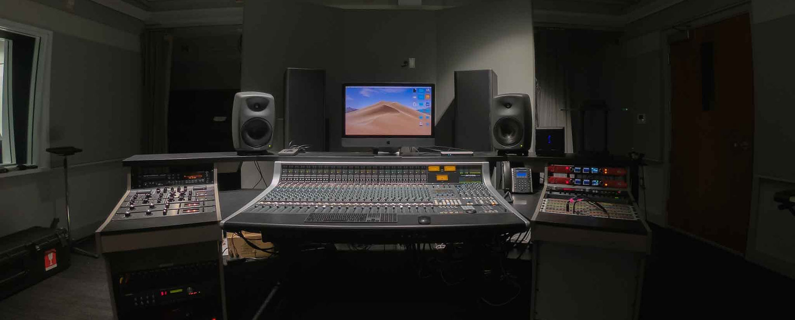
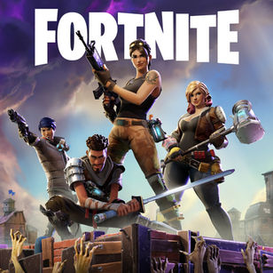
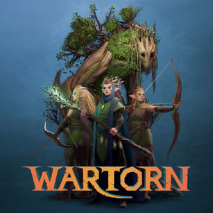
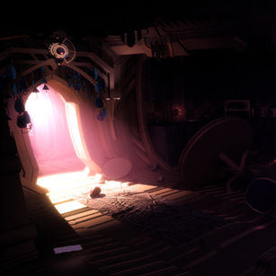
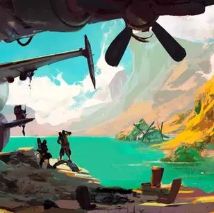
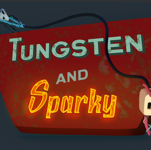
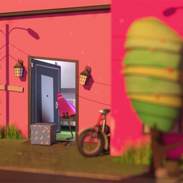

Sound design, composition and implementation for games, film and live ensemble. Based in Toronto.
I'm Mason Victoria, a composer and sound designer for video games, film and television. I also compose and arrange small and large ensemble music for live performance. Currently, I'm a Technical Game Sound Designer at Warner Brothers Post-Production Creative Services.
This site collects my freelance work, ongoing projects and reels. If you'd like to get in touch, the contact page is the quickest route.

Selected work

Lego Fortnite Odyssey
Sound designer

Fortnite
Sound designer

Wartorn
Audio director · Stray Kite Studios

FailSafe
Audio director · Stray Kite Studios

Unannounced title
Lead audio designer · Disruptive Games

Tungsten and Sparky
Game director, audio lead · Code Something Cool

Amazin
Film score · Rami Awad
The Adventures of Borf Clorgman: Space Intern
Solo developer
Dice of the Hill
Score, sound design · Beez Interactive
Portrait of a Lady
Score, sound design, mixing · Kenneth Leoncito
Scoober Splat
Score, sound design · No Bloat Studios
EspionAge
Game director, audio lead · Code Something Cool
Together, Apart
Interactive installation · Project director, creative producer · Humber Galleries
A Way Closer
Game director, creative producer, lead programmer · Humber Galleries
Swordcery
Score · LWMedia
Freedom
Film score · Kelly Han
Blog 22
Sound design · Monti Khalil